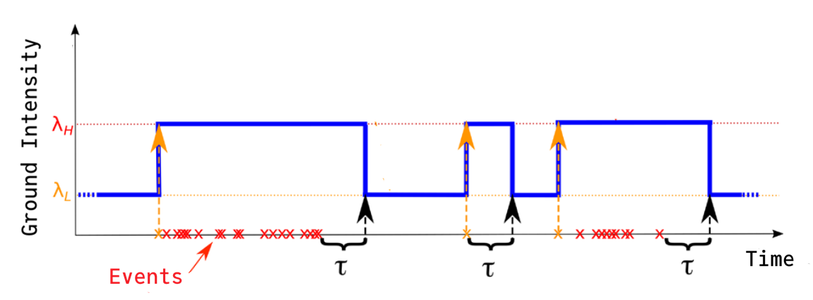
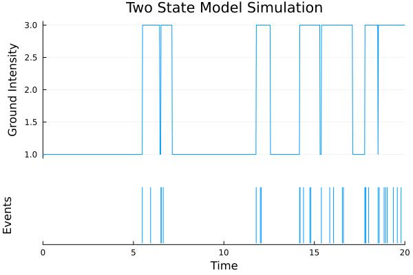
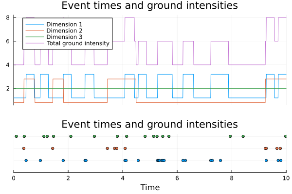

Defining Custom Processes
Although several processes are already implemented and more are to come, we might need to define our own custom processes. Here we will explain the interface for defining new processes, starting with a simple case and building up to more complex cases (which should not be too complicated).
Basic interface
For this example we will implement the two-state model from (Selva et al., 2022). This model takes three parameters, λₗ, λₕ and τ. The process starts as a Poisson model with intensity λ = λₗ. Whenever an event occurs, the process immediately switches to a Poisson process with intensity λ = λₕ for τ units of time. If an event occurs during this high intensity phase, the "counter" τ simply resets. You can visualize it below.

If the history ℋₜ up to time t contains the events t₁ < t₂ < ... < tₙ, then the equation for the conditional intensity is
λ(t | ℋₜ) = λₗ + 𝟙(tₙ > t - τ) (λₕ - λₗ),where 𝟙 is the indicator function. Notice that tₙ < t by definition of ℋₜ.
We will use a different parametrization, namely λ = λₗ and Δ = λₕ - λₗ, so the constraint λₕ > λₗ becomes Δ > 0.
The first step in our implementation is to define this new struct by subtyping the AbstractUnivariateProcess type (we will get to multivariate processes).
using PointProcesses
using Distributions
using Plots
using StatsAPI
using Optim
import PointProcesses: NoMarks, AbstractMarkDistribution, AbstractUnivariateProcess
struct TwoStateModel{R<:Real,D<:PointProcessMarkDistribution} <: AbstractUnivariateProcess
λ::R
Δ::R
τ::R
mark_dist::D
endNote: Subtype
AbstractUnivariateProcess, not justAbstractPointProcess, this way we can useTwoStateModelto build multivariate processes withIndependentMultivariateProcess.
PointProcessMarkDistribution encompasses NoMarks and any distribution in package Distributions.jl. In the next chapter we will discuss custom distributions as well.
Even if you plan on only using a non-marked process, you should keep the
mark_distfield. If you really want you can define an inner constructor likeTwoStateModel(λ, Δ, τ) → new(λ, Δ, τ, Nomarks()).
Right now you cannot do much more than accessing the fields. The only methods you have defined are ndims, DensityKind and mark_distribution. Not too interesting.
We will begin by implementing the methods ground_intensity, integrated_ground_intensity and ground_intensity_bound. They are sufficient for almost all methods to function properly.
function PointProcesses.ground_intensity(pp::TwoStateModel, t, h::History)
if isempty(h) || t <= h.times[1]
return pp.λ
else
t_n = h.times[searchsortedfirst(h.times, t) - 1] # Last event time before `t`
in_high_phase = t < t_n + pp.τ
end
return pp.λ + (in_high_phase * pp.Δ)
end
function PointProcesses.ground_intensity_bound(pp::TwoStateModel, t, h::History)
return (pp.λ + pp.Δ, Inf) # Also not the most efficient implementation, but works
end
function PointProcesses.integrated_ground_intensity(pp::TwoStateModel, h, a, b)
integral = pp.λ * (b - a)
interval_events = event_times(h, a, b)
if length(interval_events) > 0
for i in 1:(length(interval_events) - 1)
integral += pp.Δ * min(interval_events[i + 1] - interval_events[i], pp.τ)
end
integral += pp.Δ * min(b - interval_events[end], pp.τ)
end
return integral
endNotice that in
ground_intensitywe searched for the last event that occurred before timet. We need to assume thathmight be the full history, and not only the history up to timet.
With this we can now call many other methods: intensity, log_intensity, logdensityof, time_change and simulate. Here are the dependencies:
intensity→ground_intensity+densityoffrommark_distlog_intensity→intensitylogdensityof→integrated_ground_intensity+logdensityoftime_change→integrated_ground_intensitysimulate→ground_intensity+ground_intensity_bound
pp = TwoStateModel(1.0, 2.0, 0.5, Normal())
h = simulate(pp, 0.0, 20.0)
println("intensity(pp, m, t, h) = $(intensity(pp, 0.0, 0.0, h))")
println("log_intensity(pp, m, t, h) = $(log_intensity(pp, 0.0, 0.0, h))")
println("logdensityof(pp, h) = $(logdensityof(pp, h))")
println("time_change(pp, h) = $(time_change(h, pp))")
println("simulate(pp, 0.0, 10.0) = $(simulate(pp, 0.0, 10.0))")intensity(pp, m, t, h) = 0.3989422804014327
log_intensity(pp, m, t, h) = -0.9189385332046727
logdensityof(pp, h) = -54.64319283815411
time_change(pp, h) = History{Float64,Float64} with 31 events on interval [0.0, 34.79414754399499)
simulate(pp, 0.0, 10.0) = History{Float64,Float64} with 13 events on interval [0.0, 10.0)Let's plot our simulated process h along with its ground intensity.
sim_plot = plot(
event_times(h),
fill(1.0, nb_events(h));
line=:stem,
grid=false,
label=false,
xlabel="Time",
ylabel="Events",
yaxis=false,
xlim=(min_time(h), max_time(h)),
)
xs = LinRange(min_time(h), max_time(h), 1000)
intensity_plot = plot(
xs,
[ground_intensity(pp, x, h) for x in xs],
;
xaxis=false,
xgrid=false,
label=false,
ylabel="Ground Intensity",
xlim=(min_time(h), max_time(h)),
)
plot(
intensity_plot,
sim_plot;
title=["Two State Model Simulation" ""],
layout=grid(2, 1; heights=[0.7, 0.3]),
)
Lastly, we can define the fit method for estimating the parameters from an observed history. logdensityof is simply the log-likelihood of our process, so for a quick and simple example we keep the mark distribution fixed and only optimize the core process parameters.
function StatsAPI.fit(
::Type{TwoStateModel{R1,NoMarks}}, h::History, init_params::Vector{R2}
) where {R1<:Real,R2<:Real}
objective(params) = -logdensityof(TwoStateModel(params..., NoMarks()), h)
lower_bound = [0.0, 0.0, 0.0]
upper_bound = [Inf, Inf, Inf]
result = optimize(objective, lower_bound, upper_bound, init_params)
optimal = Optim.minimizer(result)
return TwoStateModel(optimal..., NoMarks())
endIt is tricky to properly estimate the parameters from this process. This implementation is conceptually correct, but it should be improved in real applications.
With the fit, simulate and time_change methods, we can perform goodness-of-fit tests for our model.
function random_params()
λ = 10.0 + rand() * 10
Δ = λ * rand()
τ = inv(λ + Δ) * (0.5 + rand())
return [λ, Δ, τ]
end
true_params = random_params()
h_unknown = simulate(TwoStateModel(true_params..., NoMarks()), 0.0, 100.0)
init_params = random_params()
pp_estimated = fit(TwoStateModel{Float64,NoMarks}, h_unknown, init_params)
pp_to_test = TwoStateModel(20.0, 30.0, 1.0 / 30.0, NoMarks())Main.TwoStateModel{Float64, NoMarks}(20.0, 30.0, 0.03333333333333333, NoMarks())n_sims=100 for the sake of this example. In real applications, this should be higher
test_result = MonteCarloTest(KSDistance{Exponential}, pp_to_test, h_unknown; n_sims=100)p-value for hypothesis test: 0.009900990099009901The statistics for goodness of fit tests currently implemented are suited only for testing the distribution of event times. They will run for marked processes, but the test results are only related to the event times.
Custom Mark Distributions
Mark distributions can also be customized. Analogously to processes, we need to subtype the AbstractMarkDistribution type. Lets make a mark distribution that changes with times.
struct LinearTimeNormal{R<:Real} <: AbstractMarkDistribution
L::R
H::R
endThere are five methods that can be used with an AbstractMarkDistribution: mark_distribution, sample_mark, DensityInterface.densityof, Base.eltype and StatsAPI.fit. The number of methods we need to implement will depend on what mark_distribution returns.
mark_distribution is used to return the distribution of the marks at a specific time t after some history h. Say mark_distribution(md::AbstractMarkDistribution, t, h::History) is of type T.
rand(::AbstractRNG, ::T)implemented ⇒sample_mark(md, t, h)workseltype(::T)implemented ⇒eltype(md)worksdensityof(::T, m)implemented ⇒densityof(md, t, h, m)worksfitmust always be implemented
function PointProcesses.mark_distribution(md::LinearTimeNormal, t, h::History)
time_ratio = (t - min_time(h)) / duration(h)
return Normal(md.L + (md.H - md.L) * time_ratio, 1)
endIt is important to think of the case where the history
his empty. If your custom distribution depends on past events, there should be a specific branch covering the caseisempty(h).
In our case mark_distribution returns a Distribution, so sample_mark, eltype and densityof are already take care of. To have all the functionality from the standard mark distributions, we would only need to implement fit.
pp = TwoStateModel(1.0, 2.0, 3.0, LinearTimeNormal(2.0, 4.0))
println(
"TwoStateModel(1.0, 2.0, 3.0, LinearTimeNormal(2.0, 4.0)) = $(TwoStateModel(1.0, 2.0, 3.0, LinearTimeNormal(2.0, 4.0)))",
)
println(
"PoissonProcess(2.0, LinearTimeNormal(2.0, 4.0)) = $(PoissonProcess(2.0, LinearTimeNormal(2.0, 4.0)))",
)
println("log_intensity(pp, m, t, h) = $(log_intensity(pp, 0.0, 0.0, h))")
println("logdensityof(pp, h) = $(logdensityof(pp, h))")
println("simulate(pp, 0.0, 10.0) = $(simulate(pp, 0.0, 10.0))")TwoStateModel(1.0, 2.0, 3.0, LinearTimeNormal(2.0, 4.0)) = Main.TwoStateModel{Float64, Main.LinearTimeNormal{Float64}}(1.0, 2.0, 3.0, Main.LinearTimeNormal{Float64}(2.0, 4.0))
PoissonProcess(2.0, LinearTimeNormal(2.0, 4.0)) = PoissonProcess(2.0, Main.LinearTimeNormal{Float64})
log_intensity(pp, m, t, h) = -2.9189385332046727
logdensityof(pp, h) = -243.43137011054455
simulate(pp, 0.0, 10.0) = History{Float64,Float64} with 26 events on interval [0.0, 10.0)Multivariate Processes
Lastly we can define a multivariate process composed of multiple independent univariate processes. If a method is available for all individual processes, it will be also available for the multivariate processes. All methods now return a vector, one for each dimension (each univariate process), and we can add an integer argument d for accessing the value for a specific dimension.
imp = IndependentMultivariateProcess([
TwoStateModel(1.2, 2.0, 0.3, Normal()),
TwoStateModel(0.8, 2.0, 0.4, NoMarks()),
PoissonProcess(2.0), # Any type of process can be added
])
sim = simulate(imp, 0.0, 10.0)
println("ground_intensity(imp, 0.0, sim) → $(ground_intensity(imp, 0.0, sim))")
println("ground_intensity(imp, 0.0, sim, 1) → $(ground_intensity(imp, 0.0, sim, 1))")
println("intensity(imp, 0.0, 0.0, sim) → $(intensity(imp, 0.0, 0.0, sim))")
println("intensity(imp, 0.0, nothing, sim, 3) → $(intensity(imp, nothing, 0.0, sim, 3))")ground_intensity(imp, 0.0, sim) → [1.2, 0.8, 2.0]
ground_intensity(imp, 0.0, sim, 1) → 1.2
intensity(imp, 0.0, 0.0, sim) → [0.4787307364817192, 0.0, 0.0]
intensity(imp, 0.0, nothing, sim, 3) → 2.0Lets end this tutorial with a nice plot of this process.
λ(t) = ground_intensity(imp, t, sim) # Returns a vector with the 3 individual intensities
events_plot = scatter()
for d in 1:ndims(sim)
scatter!(
events_plot,
event_times(sim, d),
fill(d, nb_events(sim, d));
label=nothing,
markersize=3,
)
end
plot!(
events_plot;
yaxis=false,
xlabel="Time",
xlim=(min_time(sim), max_time(sim)),
ylim=(0.0, 3.2),
)
xs = LinRange(min_time(sim), max_time(sim), 1000)
intensities_plot = plot()
for d in 1:ndims(sim)
plot!(intensities_plot, xs, getindex.(λ.(xs), d); label="Dimension $d")
end
plot!(intensities_plot, xs, sum.(λ.(xs)); label="Total ground intensity")
plot!(intensities_plot; xaxis=false, xlim=(min_time(sim), max_time(sim)), legend=:topleft)
plot(
intensities_plot,
events_plot;
title="Event times and ground intensities",
layout=grid(2, 1; heights=[0.7, 0.3]),
)